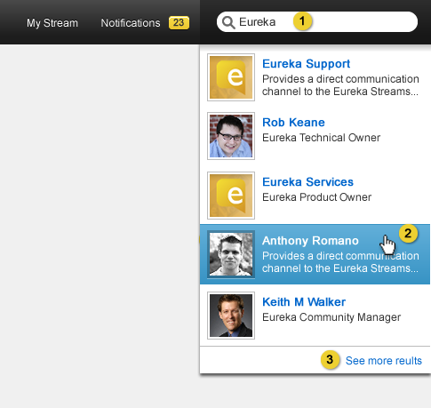

Home > Product Specification > Features > Discover a Stream
Discover a Stream
Use Eureka Connect
View Eureka Metrics
Overview
The Featured & Popular page on Eureka allows for users to view a high level summary of
content from across Eureka, including featured groups and people, popular groups, people and links, and suggested groups and people to follow.
Conditions of Satisfaction
Featuring a Group
- The Eureka administrator must be able to feature a group from the profile.
- The Eureka administrator must be able to override the group description (max 250 chars)
while featuring.
- The Eureka administrator must be able to unfeature a group that has been featured from
the profile.
Discover Page
- The knowledge worker must be able to see all the featured streams, their avatars and
their description
- The knowledge worker must be able to see all the streams ordered by most active groups
and people as shown and calculated by the 30 day daily average of number of messages.
- The knowledge worker must be able to see the top 10 most viewed streams e as shown and
calculated by the 30 day daily average of stream viewers.
- The knowledge worker must be able to see the top 10 suggested groups and people as shown
and calculated by the intersection of the knowledge worker’s following and the stream’s
following. Only unfollowed streams will be suggested.
- The knowledge worker must be able to see the top 10 most recent streams created in the
system.
- The knowledge worker must be able to see the top 10 most followed streams created in the
system.
- The knowledge worker must be able to follow any stream listed on Featured & Popular page
Searching For a Stream
- The knowledge worker must be able to perform a keyword search matching streams based on
name, title, description, and interests fields from the title bar or the Discover page.
- The knowledge worker must be able to use OR logic when performing a keyword search on
streams.
- The knowledge worker must be able to filter search results by group, or employee stream
types.
- The knowledge worker must be able to follow hyperlinked profile information and view
matching search results.
User Experience
Feature a Group

- Eureka administrators can see a Feature button that when clicked brings up the Feature
modal to feature the group. After being featured, this button changes to an “Unfeature” button.

- When the org admin clicks the feature button the feature stream modal opens allowing the org admin to override the group description before featuring, with a maximum of 250 characters.
Discover Page

- The list of featured streams, both groups and people, in the order of when they were featured, with the most recent first
- Pager controls which set of 3 featured streams the user sees. When clicked, the streams should slide over until there’s the next or previous 3 streams (depending on which button is hit). If there are no more streams in any given direction, that direction’s button should be disabled.
- Search box executes a full search detailed below
- Most active streams.
- Pager controls let the user page through the entire set of streams ordered by most active.
- The top ten most suggested streams.
- The top ten most viewed streams, sorted by views.
- The top ten most followed streams.
- The top ten most recent streams
- The follow button shows up on hover. It allows the user to follow the stream. It brings up the subscriptions modal.
- When a stream is already followed on hover it shows a Followed label.
Empty State for Suggestions
When there are no streams to suggest display the following message in the Suggested box:
“We have no suggested streams for you at this time. Try searching for people you know in the search box above and follow them to help us generate some suggestions!”
Search

- Typing in the search box immediately brings up the search results on the third character typed.
- Search results when clicked bring the user to the stream.
- Clicking on “View all Results” brings the user to the full results page detailed below.

- Search keywords
- Links to filter the search results
- Link to the employee profile
- Links to the public group profile.
- Links to private group profile. Private groups should be displayed to all knowledge
workers. If knowledge worker hovers over the icon, the message “Private Group” should be
displayed. If the knowledge worker clicks on the private group profile link and does not
have access to the private group, the Request Access to Private Group message in the [View and Manage Group Profile design][View and manage a group profile] should be displayed.

- When no results are found the message “No matches found” is displayed in the search results
Test Plan
Featuring a Group
- Verify a knowledge worker can feature a group from the profile
- Verify that clicking on the Feature button results in the Feature a Stream model appearing
- Veify the ability to enter a description for the group being featured
- Verify the featured group appears on the discover page
- Verify a knowledge worker can Unfeature a group
- Verfiy the ability to click on the unfeature button
- Verfity the group is no long on the discover page and the group desciption is the original one
Discover Page
- Verify a knowledge worker can view Featured Streams
- Verify the streams avatar and description are present
- Verify a knowledge worker can view the streams ordered by most active
- Verify the ability to view streams ordered by most active groups
- Verify the most active groups listed have the highest 30 day daily average of number of messages
- Vefity the ability to view streams ordered by most active people
- Verify the most active people listed have the highest 30 day daily average of number of messages
- Verify a knowledge worker can view the 10 ten most viewed streams
- Verify the ability to view the 10 ten most viewed
- Verify the most viewed streams have the highest 30 day daily average of number of stream viewers
- Verify a knowledge worker can view the 10 ten most viewed streams
- Verify the ability to view the 10 ten most viewed
- Verify the most viewed streams have the highest 30 day daily average of number of stream viewers
- Verify a knowledge worker can view the top 10 suggested groups and people
- Verify the ability to view the top 10 suggested groups
- Verify the suggested groups are an intersection intersection of the knowledge worker’s following and the stream’s following.
- Verify only group streams that the knowledge worker is not following are suggested
- Verify the ability to view the top 10 suggested people groups
- Verify the suggested people are an intersection intersection of the knowledge worker’s following and the stream’s following.
- Verify only people streams that the knowledge worker is not following are suggested
- Verify a knowledge worker can view the 10 most recently created streams
- Verify the ability to view the ten most recently created streams
- Verify a knowledge worker can view the 10 most followed streams
- Verify the ability to view the ten most followed streams
- Verify a knowledge worker can follow a stream listed on the Featured & Popular page
- Vefity the ability to follow any stream listed on the featured and popular page
Searching For a Stream
- Verify a knowledge worker can perform a keyword search matching employee profiles based
on name, title, description, and interests
- Verify that employees are returned if the keyword is contained in the employees display name, title, description, interests, fields
- Verify a knowledge worker can perform a keyword search matching group profiles based on
name, description, and keywords fields
- Verify groups are returned if the keyword is contained in the group name, description and/or keywords fields
- Verify a knowledge worker can confirm system is using OR logic when performing a
keyword search on profiles
- Verify that system is using OR logic when performing a keyword search on profiles
- Verify a knowledge worker can filter search results by group or employee profile
types
- Verify a keyword search results can be displayed by group, employee or both
- Verify a knowledge worker can follow hyperlink’d profile information and view matching
search results
- Verify that the search results match the hyperlink’d profile information clicked
| PAGE CONTENTS
Version 1.0
Documentation is also available for all of the following versions:
0.9 | 1.1 | 1.2 | 2.0
|